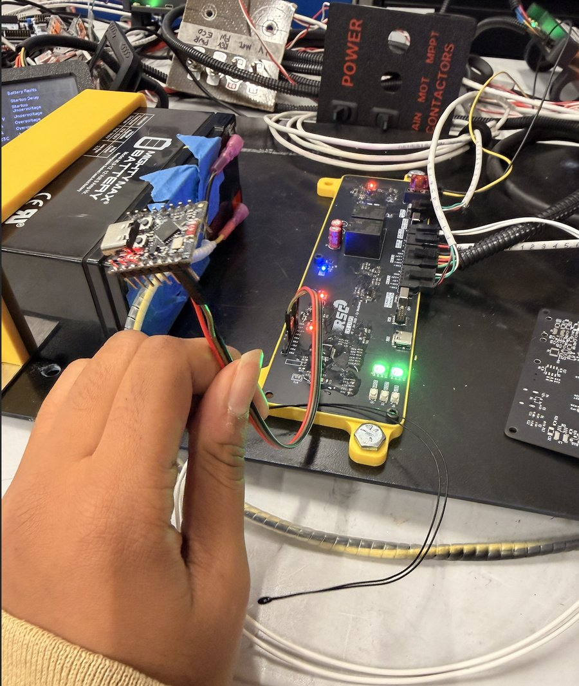
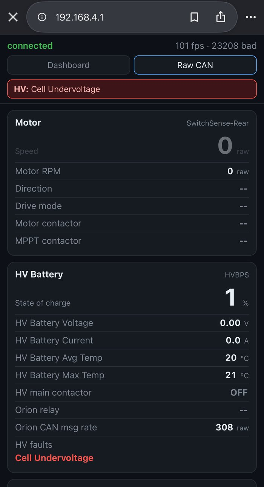
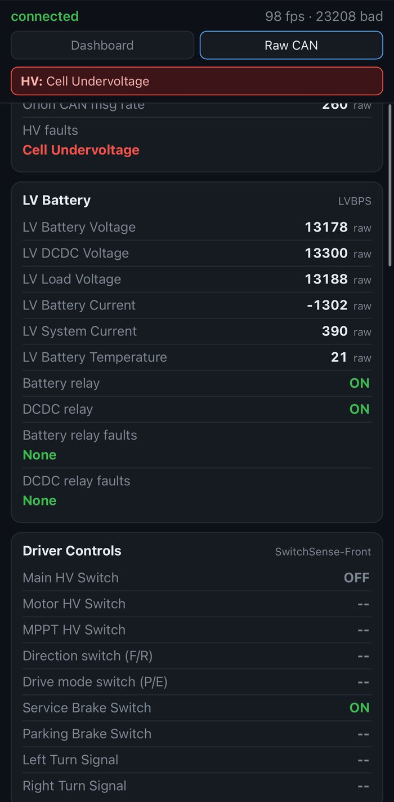

Solar Car Telemetry
Live vehicle data from the car's CAN bus, viewable in any phone or laptop browser over the car's own Wi-Fi network.

Overview
Every board on the solar car (battery management, motor, driver controls) reports its status on a shared CAN bus. To let the team see that data in real time, I built a short-range telemetry system around a single ESP32. Anyone nearby can join its Wi-Fi network, open a browser, and watch the car's data live, with nothing to install.
How it works
- Getting the car's data: one of the car's boards forwards every CAN frame to an ESP32-C3 over a serial (UART) link at 460,800 baud, as lines of text in the SLCAN format. The ESP32 parses each line and keeps the latest frame for every CAN ID.
- Its own network: the ESP32 creates its own Wi-Fi access point, so it works anywhere, with no router or internet connection. The dashboard lives at 192.168.4.1.
- Live updates: it serves the dashboard page, then pushes data over WebSockets ten times a second. It only sends the CAN IDs that changed, in small batches, to keep the link light. A browser that just connected first gets a full snapshot, so switches and faults that rarely re-send still show up.
- Decoding in the browser: the ESP32 only relays raw frames. The page's JavaScript turns them into named signals, on/off states, fault flags, and scaled units, so changing how a signal is shown doesn't require reflashing the ESP32.
The dashboard
The page groups decoded data by subsystem: motor, high-voltage battery, low-voltage battery, driver controls, the four solar array MPPTs, and all 24 battery module voltages. Active faults show in a red banner at the top. Values that stop arriving dim out, so stale data is never mistaken for live data. A Raw CAN tab lists every ID with its data, count, and rate for debugging. The header shows the connection status, CAN frames received per second, and a running count of malformed serial lines.


Code
The source code is kept private for competitive reasons. It contains the Rutgers Solar Car team's CAN message map and vehicle fault definitions, which the team doesn't share publicly while we compete. I'm happy to walk through the code and architecture in an interview.